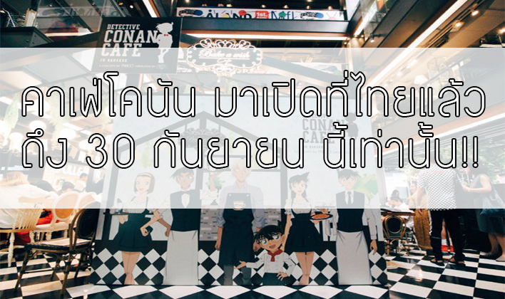
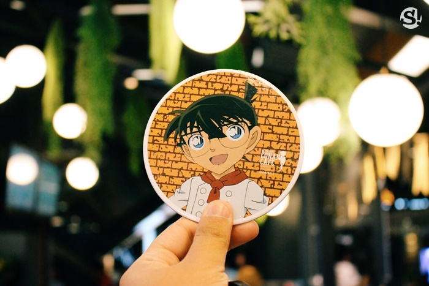
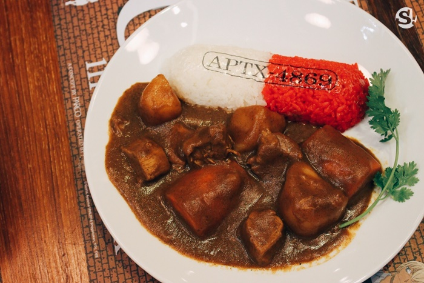

|
|
 โคนันคาเฟ่ครั้งแรกในเมืองไทย!!โดยคาเฟ่โคนันแห่งนี้จะยกโลกในการ์ตูนโคนันทั้งใบมาไว้ ณ สยามเซ็นเตอร์แห่งนี้ โดยโครงการนี้เป็นการร่วมมือกันระหว่าง Bake A Wish ร้านขนมสไตล์ญี่ปุ่นที่ได้รับความนิยมอย่างสูงในประเทศไทย และบริษัท PARCO Co., Ltd (ญี่ปุ่น) และ บริษัท PARCO Pte Ltd (สิงคโปร์) เนรมิตรให้ร้าน Bake A Wish สาขาสยามเซ็นเตอร์กลายเป็น “Detective Conan Café in Bangkok” คาเฟ่โคนันแบบเต็มรูปแบบครั้งแรกนอกประเทศญี่ปุ่น   ข้อมูลเพิ่มเติมที่ตั้งโคนันคาเฟ่ : Bake A Wish ชั้น G Siam Center 989 ถนน พระรามที่ 1 แขวง ปทุมวัน เขต ปทุมวัน กรุงเทพมหานคร ระยะเวลาเปิดบริการ : 2 สิงหาคม – 30 กันยายน พ.ศ. 2561(60 วัน) เปิดบริการ 10:00 น. สั่งอาหารได้ถึง 21:30 น. ติดต่อ : Detective Conan Cafe in Bangkok
|
||||||
| Design& System By Warayut | |||||||